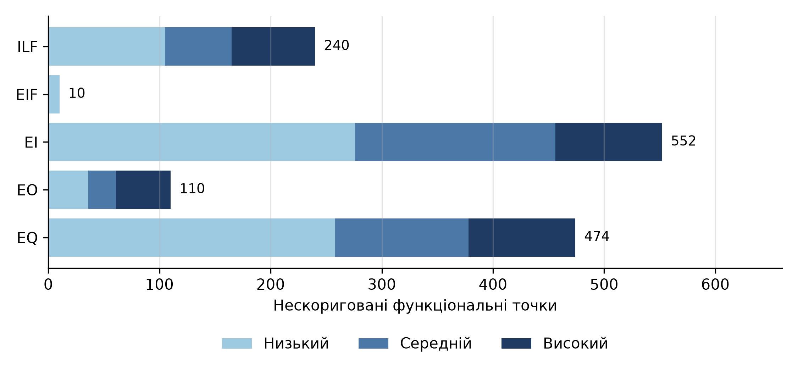
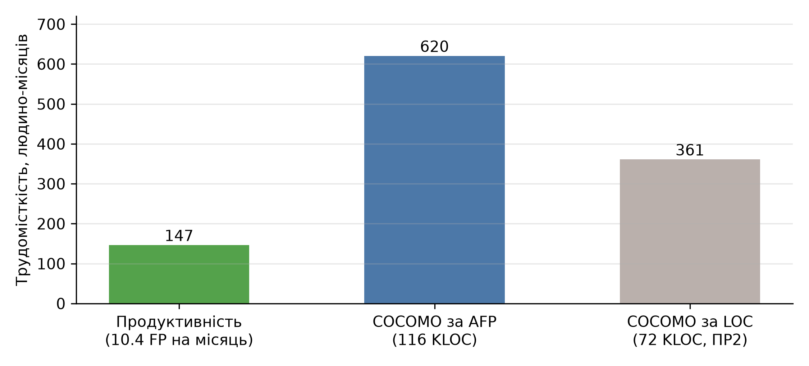

КПІ ім. Ігоря Сікорського · Практична робота № 3
Оцінка розміру і вартості Shopizer за методом IFPUG
Виконав: Соколов Олександр, студент групи ІП-33
Дисципліна «Економіка IT-індустрії та підприємництво»
| Файл | RET | DET | Складність |
|---|---|---|---|
| Замовлення | 11 | 113 | Високий |
| Товар | 7 | 78 | Високий |
| Клієнт | 3 | 53 | Високий |
| Опції товару | 6 | 38 | Високий |
| Довідники | 8 | 30 | Високий |
| Доставка | 2 | 34 | Середній |
| Кошик | 3 | 16 | Низький |
| Користувач | 3 | 23 | Середній |
| Файл | RET | DET | Складність | UFP |
|---|---|---|---|---|
| Тарифи перевізників (UPS, USPS) | 2 | 8 | Низький | 5 |
| Платіжні шлюзи | 2 | 12 | Низький | 5 |
| Тип | Низький | Середній | Високий | Усього |
|---|---|---|---|---|
| EI | 92 | 45 | 16 | 153 |
| EO | 9 | 5 | 7 | 21 |
| EQ | 86 | 30 | 16 | 132 |
| Разом | 187 | 80 | 39 | 306 |
| Транзакція | Тип | FTR | DET | Складність | UFP |
|---|---|---|---|---|---|
| GET /store/unique | EQ | 1 | 1 | Низький | 3 |
| DELETE /private/product/{id} | EI | 2 | 2 | Низький | 3 |
| PUT /private/product/{id} | EI | 2 | 87 | Високий | 6 |
| GET /private/orders/{id} | EQ | 2 | 147 | Високий | 6 |
| GET /cart/{code} | EO | 2 | 92 | Високий | 7 |
Для EQ складність – більша з оцінок входу і виходу. DET без технічних параметрів: магазин, мова, пагінація

Нескориговані точки за компонентами
| Характеристика | Оцінка | Характеристика | Оцінка |
|---|---|---|---|
| Обмін даними | 5 | Зміна даних | 4 |
| Розподіл обробки | 3 | Складність обробки | 4 |
| Продуктивність | 2 | Повторне використання | 3 |
| Апаратні обмеження | 1 | Зручність інсталяції | 3 |
| Навантаження | 3 | Адміністрування | 2 |
| Взаємодія з користувачем | 5 | Портування | 4 |
| Ергономіка | 3 | Гнучкість | 3 |
Оцінка від 0 до 5 за кодом і конфігурацією, обґрунтування – у звіті. TDI = 45, VAF = 45 · 0.01 + 0.65 = 1.10
UFP = 1 386
VAF = TDI · 0.01 + 0.65 = 1.10
AFP = UFP · VAF = 1 525
Діапазон VAF – від 0.65 до 1.35

Трудомісткість, людино-місяців
| Спосіб | Вартість, $ | $ за FP |
|---|---|---|
| 10.4 FP на місяць | 366 490 | 240 |
| COCOMO за AFP | 1 550 908 | 1 017 |
| COCOMO за LOC | 902 364 | 592 |
Повний список – у звіті